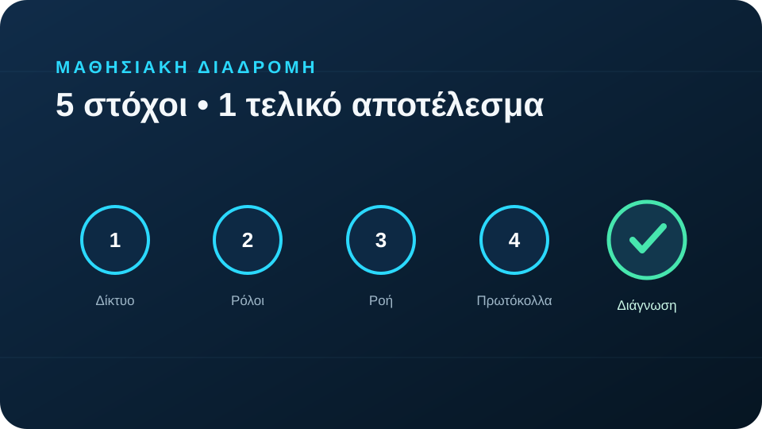
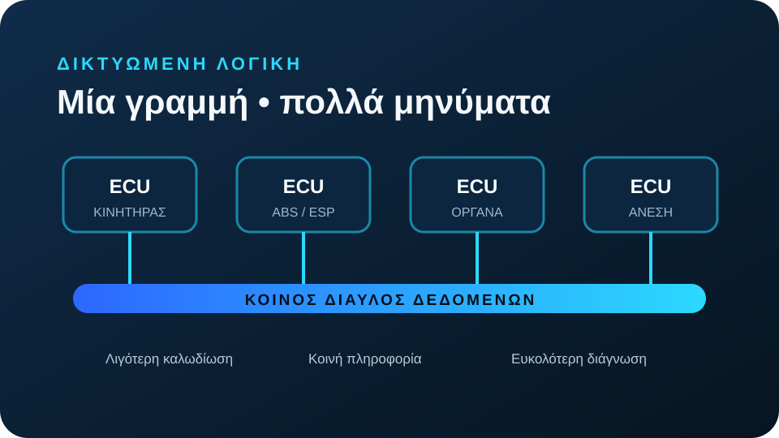
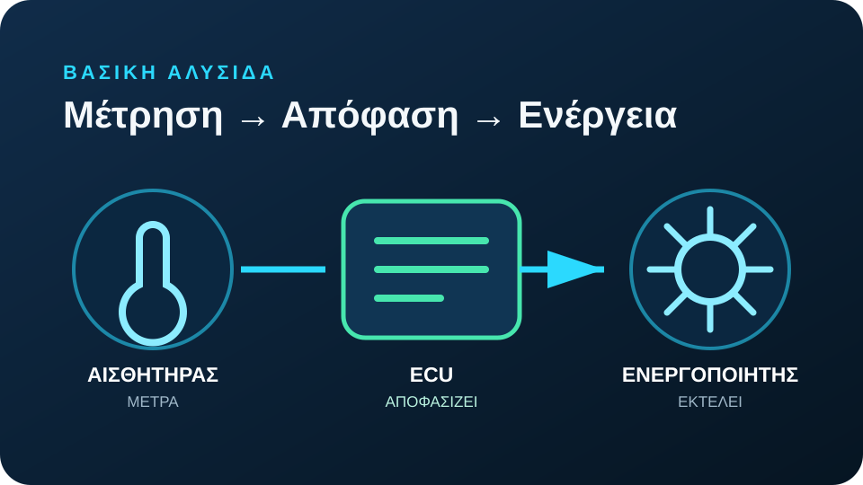
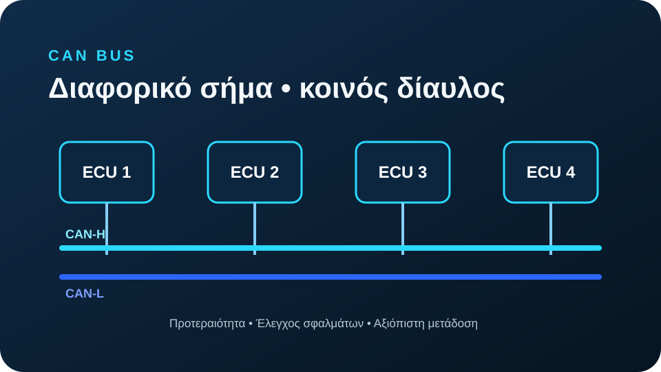
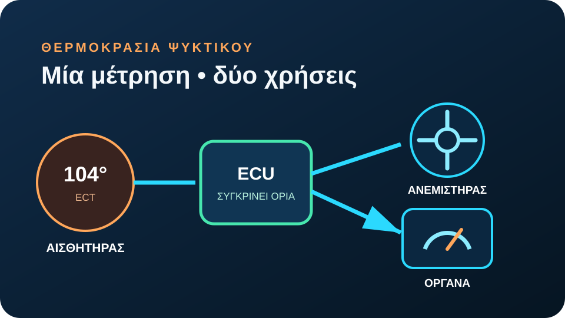
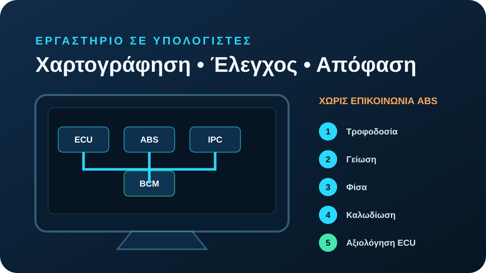
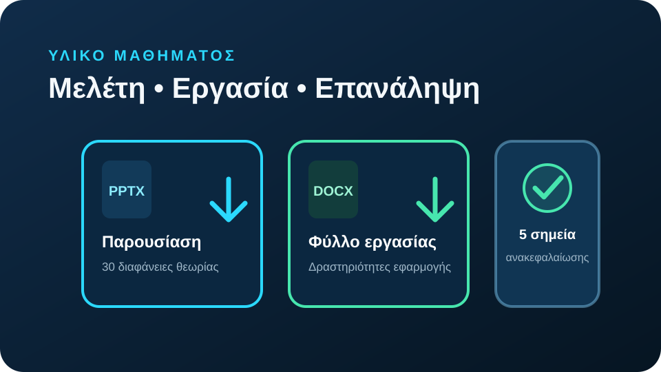
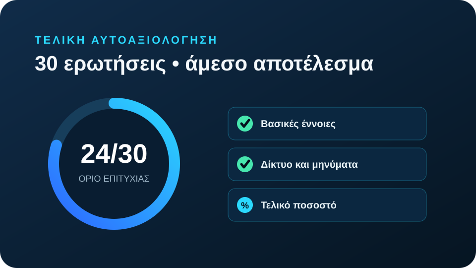

1 ΕΙΣΑΓΩΓΗ
Εισαγωγή στα δίκτυα οχημάτων
Πώς αισθητήρες, ηλεκτρονικές μονάδες ελέγχου και ενεργοποιητές συνεργάζονται ανταλλάσσοντας δεδομένα.

2 ΜΑΘΗΣΙΑΚΟΙ ΣΤΟΧΟΙ
Τι θα μπορείς να κάνεις
Πέντε σαφείς δεξιότητες που θα ελέγξεις στο τέλος του μαθήματος.

Εξηγείς την ανάγκη δικτύωσης
Γιατί οι σύγχρονες ECU πρέπει να ανταλλάσσουν δεδομένα.
Διακρίνεις τους τρεις ρόλους
Αισθητήρας, ECU και ενεργοποιητής.
Ακολουθείς τη ροή πληροφορίας
Μέτρηση → επεξεργασία → μήνυμα → ενέργεια.
Αναγνωρίζεις βασικά πρωτόκολλα
SAE J1850, PCI Bus, I²C και CAN Bus.
Εφαρμόζεις αρχική διάγνωση
Ελέγχεις τροφοδοσία, γείωση, συνδέσεις και δίκτυο.
3 ΓΙΑΤΙ ΧΡΕΙΑΖΟΝΤΑΙ ΔΙΚΤΥΑ;
Μία κοινή υποδομή αντί για δεκάδες ξεχωριστές γραμμές

ΠΑΛΑΙΟΤΕΡΗ ΛΟΓΙΚΗ
Ξεχωριστή καλωδίωση
- Περισσότερα καλώδια
- Μεγαλύτερο βάρος
- Δυσκολότερη επισκευή
ΔΙΚΤΥΩΜΕΝΗ ΛΟΓΙΚΗ
Κοινός δίαυλος δεδομένων
ECUΚινητήρας
ECUABS
ECUΌργανα
ECUΆνεση
ΚΟΙΝΟΣ ΔΙΑΥΛΟΣ
- Κοινή χρήση δεδομένων
- Λιγότερες ειδικές συνδέσεις
- Ευκολότερη διάγνωση
Λιγότερη καλωδίωσηΚοινή πληροφορίαΔιάγνωσηΕπεκτασιμότητα
4 Η ΒΑΣΙΚΗ ΑΛΥΣΙΔΑ
Μέτρηση, απόφαση, ενέργεια
Κάθε εξάρτημα έχει διαφορετικό ρόλο μέσα στο λειτουργικό σύστημα.

Μετατρέπει θερμοκρασία, πίεση, θέση ή ταχύτητα σε ηλεκτρική πληροφορία.
Διαβάζει δεδομένα, τα συγκρίνει και στέλνει εντολές ή νέα μηνύματα.
Μετατρέπει την ηλεκτρική εντολή σε κίνηση, ροή, πίεση ή άλλη φυσική δράση.
Μέσοφυσική σύνδεση
+
Μήνυμαοργανωμένα δεδομένα
+
Πρωτόκολλοκανόνες επικοινωνίας
=
Δίκτυοσυντονισμένη ανταλλαγή
5 ΜΗΝΥΜΑΤΑ ΚΑΙ ΠΡΩΤΟΚΟΛΛΑ
Ίδια έννοια, διαφορετική κλίμακα και χρήση

SAE J1850Παλαιότερη δικτύωση και διάγνωσηLEGACY
PCI BusΠαλαιότερες λύσεις κατασκευαστώνΟΧΗΜΑ
I²CΜέσα σε ECU ή ηλεκτρονική πλακέταΕΣΩΤΕΡΙΚΟ
CAN BusΒασικός δίαυλος μεταξύ ECUΚΥΡΙΟ
Σωστή επικοινωνία =σωστή τιμήσωστός χρόνοςσωστός παραλήπτης
6 ΠΑΡΑΔΕΙΓΜΑ ΟΧΗΜΑΤΟΣ
Έλεγχος θερμοκρασίας ψυκτικού
Μία μέτρηση χρησιμοποιείται ταυτόχρονα για ψύξη και ενημέρωση του οδηγού.

ΣΥΝΘΗΚΗ104 °CΥπέρβαση ορίου λειτουργίας
1Αισθητήρας ECTΜετρά 104 °C
→
2ECU κινητήραΣυγκρίνει με τα όρια
↗↘
3ΑΑνεμιστήραςΕνεργοποιείται
3ΒΠίνακας οργάνωνΕνημερώνει τον οδηγό
Κεντρική ιδέα
Το ίδιο δεδομένο μπορεί να μεταδοθεί στο δίκτυο και να χρησιμοποιηθεί από περισσότερες από μία ηλεκτρονικές μονάδες.

- 115΄Ταξινόμησε εξαρτήματα
Αισθητήρας, ECU ή ενεργοποιητής;
- 215΄Σχεδίασε τη ροή ψύξης
ECT → ECU → δύο έξοδοι.
- 315΄Κατασκεύασε δίκτυο ECU
Κινητήρας, ABS, όργανα και άνεση.
- 410΄Αντιστοίχισε πρωτόκολλα
J1850, PCI, I²C και CAN.
- 510΄Διάγνωσε απώλεια επικοινωνίας
Βάλε τους ελέγχους στη σωστή σειρά.
ΠΕΡΙΣΤΑΤΙΚΟ«Δεν υπάρχει επικοινωνία με τη μονάδα ABS»
Το μήνυμα είναι σύμπτωμα, όχι απόδειξη κατεστραμμένης ECU.
- Τροφοδοσία
- Γείωση
- Φίσα
- Καλωδίωση
- ECU
8 ΥΛΙΚΟ ΚΑΙ ΑΝΑΚΕΦΑΛΑΙΩΣΗ
Όλα όσα χρειάζεσαι πριν από το τεστ

PPTX
ΠΑΡΟΥΣΙΑΣΗΘεωρία 30 διαφανειών
Λήψη
Ορισμοί, τεχνικά διαγράμματα και παραδείγματα.
DOCX
ΦΥΛΛΟ ΕΡΓΑΣΙΑΣΕργαστηριακές δραστηριότητες
Λήψη
Ροή δεδομένων, δίκτυο ECU και διάγνωση ABS.
Οι ECU συνεργάζονται μέσω δικτύων.
Αισθητήρας → ECU → ενεργοποιητής.
Τα μηνύματα μεταφέρουν κωδικοποιημένα δεδομένα.
Τα πρωτόκολλα ορίζουν τους κανόνες.
Η διάγνωση εξετάζει ολόκληρη τη διαδρομή.
9 ΤΕΛΙΚΗ ΑΥΤΟΑΞΙΟΛΟΓΗΣΗ
Τεστ Μαθήματος 1
- 30ερωτήσεις
- 1επιλογή
- 24/30όριο επιτυχίας
- %τελικό ποσοστό

Πρόοδος τεστ
0/30 απαντημένες
Σωστές απαντήσεις0/30
Ποσοστό επιτυχίας0%
Στάδιο 1 από 9